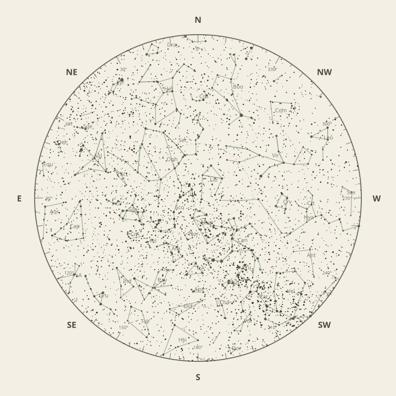

Monthly field almanac
June 2026
Observing reference for South East Queensland, Australia.


The month in one sentence · at a glance
Galactic Centre viewing is best on 13 Jun 2026, from 6:47 pm to 5:37 am, reaching 89°.
- New Moon
- 15 Jun Darkest skies
- Full Moon
- 1 Jun Brightest skies
- Best dark window
- 19 Jun 12h 42m
Conditions now
Is the sky likely to cooperate?
Checking the sky near South East Queensland, Australia…
Find your bearings
The mid-month sky at 10 pm.
Face the matching compass direction and read outward from the centre toward the horizon.

Night planner
Plan the sky for your date.
Choose an observing date to see astronomical darkness, Moon interference, Galactic Centre visibility and the strongest planets.
Best low-Moon dark periods this month
- 5:28 pm–6:10 am12h 42m · 22% Moon
- 5:28 pm–6:09 am12h 42m · 14% Moon
- 5:28 pm–6:09 am12h 42m · 7% Moon
What deserves attention
Top picks for June.
- Milky Way
Milky Way core window
10h 50m with 89° altitude.
- Planets
Neptune
Best monthly date at 62° altitude.
- Planetary events
Mercury greatest eastern elongation
Evening sky; 24.5° from the Sun.
- Occultations
HIP 81821 lunar occultation
1:33 am to 3:04 am; Moon at 68° altitude for the first listed contact.
- Milky Way
Milky Way core window
10h 50m with 89° altitude.


Moon and darkness
Read the lunar month.
Prefer minimum illumination for faint targets; bright lunar observing belongs near the fullest phase.
Complete lunar data →

Milky Way and deep sky
Recommended core sessions.
- 6:47 pm–5:37 am10h 50m · core to 89°
- 6:28 pm–5:18 am10h 50m · core to 89°
- 6:37 pm–5:27 am10h 50m · core to 88°


Planet visibility
Useful at twilight.
Evening
- Venus30 Jun · 5:30 pm30° · Good
- Jupiter1 Jun · 5:30 pm28° · Good
- Mercury20 Jun · 5:30 pm15° · Poor
Predawn
- Neptune23 Jun · 6:00 am62° · Excellent
- Saturn30 Jun · 6:00 am59° · Excellent
- Mars30 Jun · 6:00 am24° · Fair
- Uranus30 Jun · 6:00 am21° · Fair
Other opportunities
Events worth noting.
- Mercury greatest eastern elongationEvening sky; 24.5° from the Sun.
- HIP 81821 lunar occultation1:33 am to 3:04 am; Moon at 68° altitude for the first listed contact.
- HIP 85318 lunar occultation6:47 pm to 7:50 pm; Moon at 15° altitude for the first listed contact.


Data and downloads
Need every detail?
2 comet calculations are unavailable; they remain in the data library.
Occultation times use a smooth lunar limb; confirm grazing events with IOTA Occult 4.